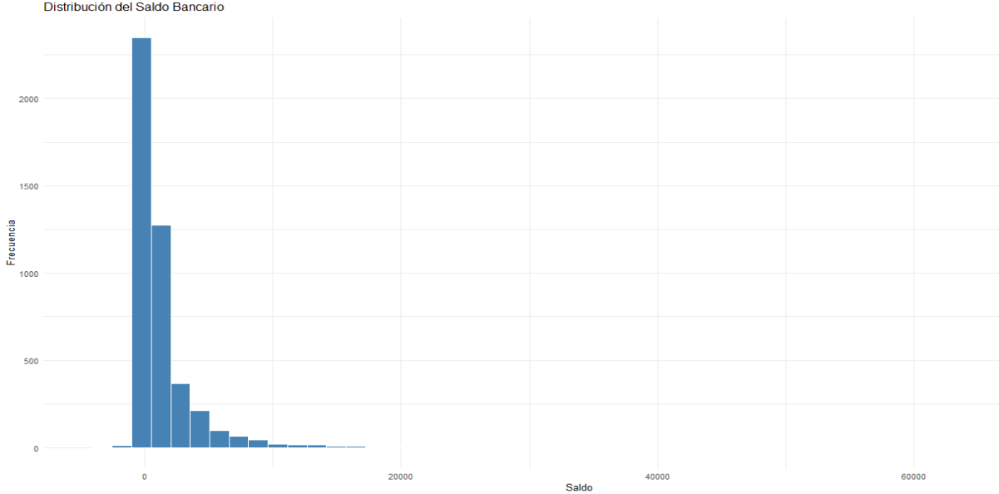
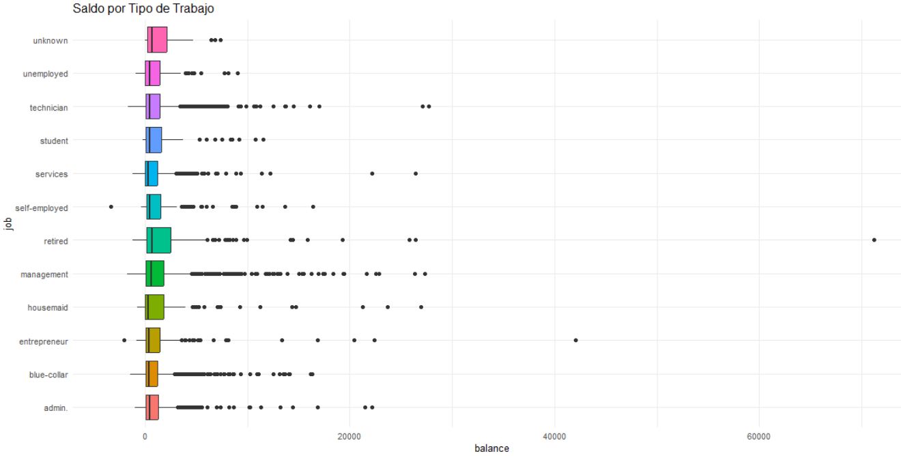
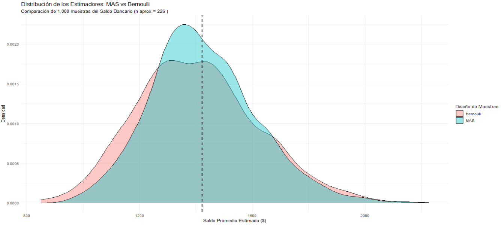
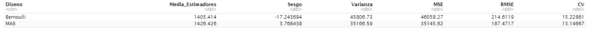
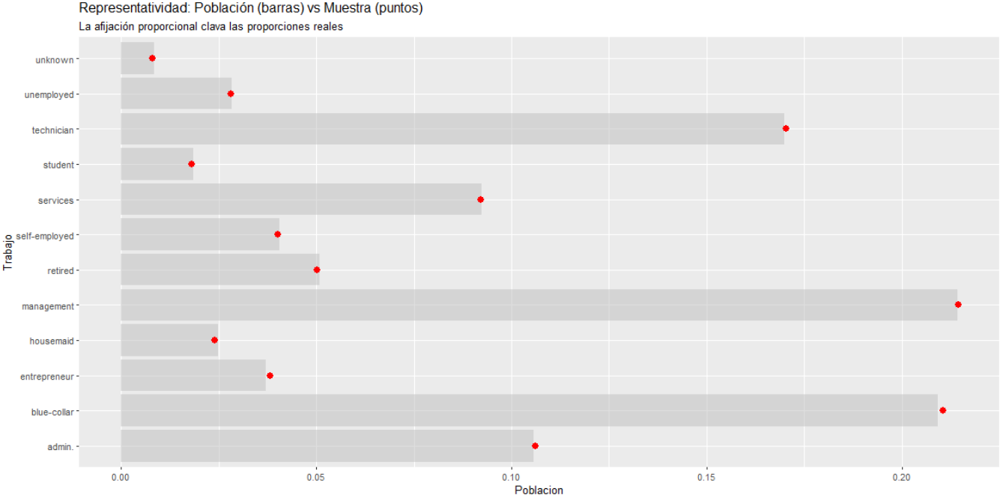
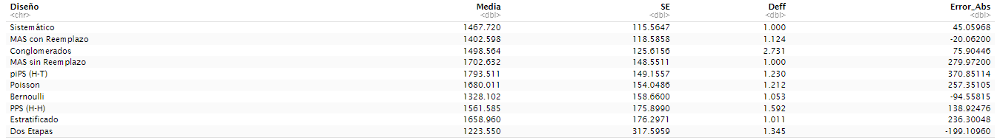
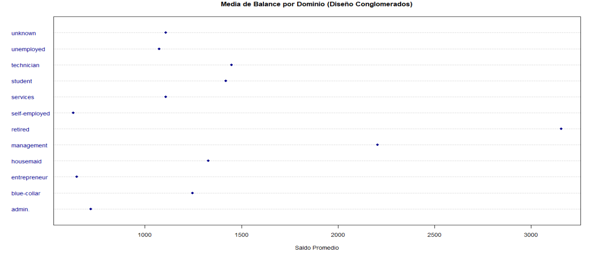
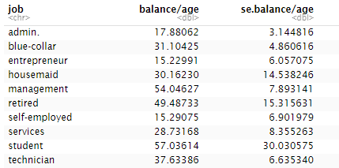
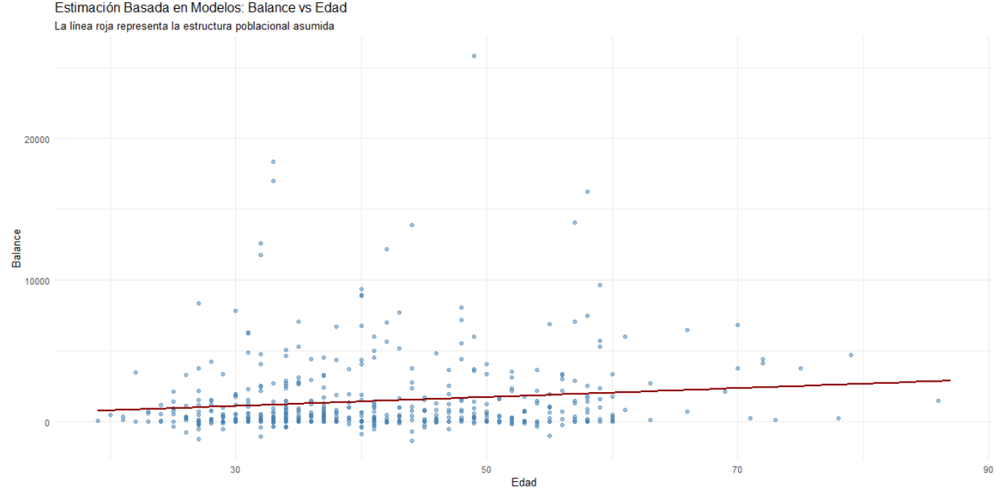

Metodología
- Introducción
- Muestreo Aleatorio Simple sin Reemplazo
- Diseño Bernoulli
- Muestreo Aleatorio Simple con Reemplazo
- Diseño Estratificado
- Diseño Sistemático
- Diseño Poisson
- Diseño pps y πps
- Muestreo por Conglomerados
- Muestreo en dos etapas
- Efecto Diseño (deff)
- Estimacion por dominios
- Efecto de Sesgo y Intervalos de Confianza
- Estimador de una Razon R
- Jackknife y Bootstrap
- Problemas y sesgo de cobertura
- Estimador asististido por modelos (GREG)
- Estimador Basado en Modelos
- Post-estratificacion
- Raking
- Trimming
- No Respuesta
- Muestras no probabilisticas
Introducción
El Muestreo es la parte de la estadistica que selecciona muestras de la poblacion objetivo, observa las características de las unidades de muestreo seleccionadas y luego usar esas observaciones para hacer inferencias sobre toda la población objetivo.
En nuestro caso tenemos una poblacion objetivo que son todos los clientes actuales de un banco, nuestra poblacion objetivo tiene un tamaño de N = 45,211 observaciones. En nuestro dataset tenemos datos sobre clientes de un banco (edad, tipo de trabajo, saldo, si aceptaron un préstamo).
Nuestro Marco Muestral (Sampling Frame) es la base de datos bank.csv
La Unidad de Muestreo es el cliente individual.
En muestreo lo que hacemos es obtener una muestra para realizar una estimacion del promedio de una variable de interes, en nuestro caso nuestra variable de interes es "balance" que representa el dinero que tiene un usuario del banco y nos interesa estimar el promedio de esta variable (que en realidad el promedio es estimar el total y dividir esa estimacion entre el tamaño de la poblacion si es conocido o entre el tamaño de la muestra) que es una variable continua con alta asimetría y valores atípicos, lo cual nos influira al querer obtener una estimacion del promedio de esta variable.
Luego contamos con variables auxiliares, que son todas las demas variables del set de datos, como job, education, marital, age, etc que puede o no tener una correlacion con nuestra variables de interes que es balance, cuanto mas correlacion haya entre alguna de estas variables auxiliares y balance, mejores seran las estimaciones. Estas variables tambien nos serviran para diversos metodos que veremos mas adelante como Estratificación, Raking, Post-estratificación.
Los datos provienen de una base de datos institucional. Dado que los recursos para realizar encuestas a profundidad son limitados, se requiere un diseño muestral que capture la variabilidad del balance sin sesgar los resultados hacia grupos sobre-representados (como clientes con empleos administrativos).
Si empezamos explorando la distribucion de nuestra variable de interes balance

Vemos que tenemos asimetría extrema con un sesgo a la derecha.
La gráfica muestra una concentración masiva de clientes en saldos bajos, cercanos a 0, y una cola muy larga hacia la derecha. Esta asimetria nos causara problemas mas adelante los cuales resolveremos.
Si hacemos un Muestreo Aleatorio Simple (MAS), tenemos una probabilidad altísima de no seleccionar a ninguno de los clientes con saldos altos (los que están en la cola derecha). Esto causaría una subestimación sistemática del saldo promedio del banco.
Ahora en cuanto a las distintas profesiones







